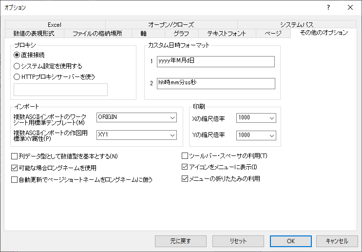

(オプション)「その他のオプション」タブ
Options-Dialog-Misc-Tab
- 
プロキシグループ
カスタム日時フォーマットグループ
このグループではユーザ自身のカスタム日時フォーマットを作ることができます。設定されたカスタム日時フォーマットは、ワークシート列をダブルクリックして、｢列プロパティ｣ダイアログボックスの『列のデータ型』ドロップダウンリストで｢日付｣が選ばれた時に、『表示フォーマット』ドロップダウンリストの項目として現れます。しかし、このカスタム日時フォーマットはプロジェクトまたはOrigin.iniに保存できません。これらは、ローカルユーザによって定義されたプロジェクトを表示する時にのみ適用します。プロジェクトをそれぞれのコンピュータで開くと、同じディスプレイを見るわけではありません。
カスタム日時フォーマットでは、その定義のピクチャ文字列は60バイトを越えることはできません。また、ピクチャ文字列が日付部分と時刻部分の両方を含む時、日付の中に時間のフォーマット要素を含んだり、時刻の中に日付のフォーマット要素を含んだりして、TIME-DATE-TIMEやDATE-TIME-DATEのいわばサンドイッチ形式とすることは禁止されています。
| テキストボックスの入力...
|
意味...
|
Originでの表示
|
|
M
|
月
|
- M = 月を示す数字 (例えば、1月の1)。フォーマット要素が後続する時は、引用符(')で囲まれた区切り文字を挿入してください。
- MM = 月を示す2桁の数字（例えば、1月の01）。
- MMM = 日本語版：使用不可
- MMMM = 月の名前 (例えば、1月)。フォーマット要素が後続する時は、引用符(')で囲まれた区切り文字を挿入してください。
|
|
d
|
日
|
- d = 日を示す数字 (例えば、1日の1)。フォーマット要素が後続する時は、引用符(')で囲まれた区切り文字を挿入してください。
- dd = 日を示す2桁の数字（例えば、1日の01）。
- ddd = 1文字の曜日（例えば、火曜日の火）。
- dddd = 長い曜日名（例えば、火曜日）。フォーマット要素が後続する時は、引用符(')で囲まれた区切り文字を挿入してください。
|
|
y
|
年
|
- y = 先行ゼロを除いた西暦年の下2桁の数字 (例えば、1901 = 1)。フォーマット要素が後続する時は、引用符(')で囲まれた区切り文字を挿入してください。
- yy = 2桁の西暦年を示す数字 (例えば、1901 = 01)。
- yyyy = 西暦年(全桁)を示す数字 (例えば、1901)。
|
|
h
|
時間
|
- h = 先行ゼロを除いた12時間制の｢時｣(例えば、午前6時 = 午後6時 = 6)。フォーマット要素が後続する時は、引用符(')で囲まれた区切り文字を挿入してください。
- hh = 先行ゼロを含む12時間制の｢時｣(午前6時 = 午後6時 = 06)。
|
|
H
|
時間
|
- H = 先行ゼロを除いた24時間制の｢時｣(例えば、午前6時 = 6、午後6時 = 18)。フォーマット要素が後続する時は、引用符(')で囲まれた区切り文字を挿入してください。
- HH = 先行ゼロを含む24時間制の｢時｣(例えば、午前6時 = 06、午後6時 = 18)。
|
|
m
|
分
|
- m = 先行ゼロを除いた｢分｣。フォーマット要素が後続する時は、引用符(')で囲まれた区切り文字を挿入してください。
- mm = 先行ゼロを含む｢分｣。
|
|
s
|
秒
|
- s = 先行ゼロを除いた｢秒｣。フォーマット要素が後続する時は、引用符(')で囲まれた区切り文字を挿入してください。
- ss = 先行ゼロを含む｢秒｣。
|
|
#
|
秒の小数部
|
- # = 1桁の秒の小数部
- ## = 2桁の秒の小数部
- ### = 3桁の秒の小数部
- #### = 4桁の秒の小数部
|
|
t
|
午前/午後
|
- t = 午前/午後を示す1文字。AかP。
- tt = 午前/午後を示す1文字。AMかPM。
|
カスタム日時のサンプル
フォーマットに表示するカスタム日時フォーマットを設定してみましょう。
1998年9月5日土曜日
このカスタム日時フォーマットのピクチャ文字列は次のようになります。
'dddd', 'MMM' 'd', 'yyyy'
この日時フォーマットの日時フォーマット要素が、大文字、小文字を使い分けていることに注意してください。 (例えば、"MM"は"mm"ではありません)2つの連続するフォーマット要素の間には、区切り文字を挿入することができます。この区切り文字は、上表に挙げられた日時フォーマット要素と重ならない、任意のASCII文字 (日本語版: 漢字等の1字が使えます。) が使えます。正しい日時フォーマットの解釈が確実でない場合は、区切り文字をシングルクォート(')で囲むことが必要です。ただし、日時フォーマット要素が、ピクチャ文字列の最後に来る場合は、引用符は省略することができます。この区切り文字は、ワークシート表示でも同じ位置に表示されます。しかし、シングルクォート(')は表示されません。｢ワークシート列フォーマット｣ダイアログボックスの『表示フォーマット』ドロップダウンリストの項目の表示にも表示されません。シングルクォート(')で囲んだ区切り文字を2つ連続して指定することができません。例えば、｢ddd '|' '-'MMM｣のようにシングルクォートで囲まれた区切り文字を連続して並べることは禁止されています。
また、区切りのスペースが、シングルクォート(')で囲まれている時、指定されたスペースが必ずそこに来るものとして解釈されます。つまり、そのセルにデータを入力する時、シングルクォート(')で囲まれたスペースと同じだけの文字数のスペースで要素が区切られる必要があります。もし、データがスペースで区切られていないような場合は、フォーマットの方の区切りのスペースにもシングルクォートを付けないでください。このシングルクォートのないフォーマット区切りは、単にピクチャ文字列の並びを間違いなく解釈するためだけに使われます。例として次の表をご覧ください。
| カスタム日時
|
入力
|
出力
|
メモ
|
|
MM dd
|
0416
|
04 16
|
シングルクォートの無いスペースは無視されます。入力はフォーマットに従います。
|
|
MM' 'dd
|
02 12
|
02 12
|
1つのスペースで月と日を区切ります。入力文字列に余分なスペースがあっても構いません。
|
|
MM' 'dd
|
0212
|
--
|
1つの区切り用のスペースが必要ですが、入力にはスペースが無いため解釈できません。(エラー)
|
インポートグループ
| 複数ASCIIインポートのワークシート用標準テンプレート
|
このコンボボックスは、複数のASCIIファイルを複数のワークブックにインポートするときに使われるデフォルトのワークブックテンプレートを指定します。
|
| 複数ASCIIインポートの作図用標準XY属性
|
このコンボボックスは、複数ASCIIのインポートダイアログボックスの下側のパネルで、列のXY属性列のリストのデフォルトの設定を制御します(このダイアログボックスは、グラフをアクティブにして、標準ツールバーの_Miscellaneous_Tab/Button_Import_Multiple_ASCII.png) ボタンをクリックすると開きます。)。この値は、グラフに直接データをインポートするときのデフォルトのXY属性を指定します。 ボタンをクリックすると開きます。)。この値は、グラフに直接データをインポートするときのデフォルトのXY属性を指定します。
-
- Originは、すべての列をインポートします。最初の列をX値とし、残りずべての列をY値として扱います。この場合、「1」は最後の文字「Y」が残りすべての列に対して適用されるということを示しています。
- Originは、データの最初の列を無属性にし、XY1のルールに従ってファイルの残りをインポートします。
- Originは、最初の列をX値、2列目をY値として扱います。
- Originは、すべての列をインポートします。しかし、この場合、Originは、最初の列をX1、2列目をY1、3列目をX2、4列目をY2のように扱います。この場合、「2」は最後の2文字「X」「Y」が残りすべての列に対して順に適用されるということを示しています。
- Originは、最初の列をX値、2列目をY値、3列目をYエラー値として扱います。
- Originは、最初の列をX値、2列目をY値、3列目をZ値として扱います。
|
印刷グループ
| 『Xの縮尺倍率』コンボボックス
|
このコンボボックス内の値で、印刷時のX軸の長さを (1000を等倍として) 調整することできます。プリンタが、レイヤの｢作図の詳細｣ダイアログボックス、『レイヤの大きさ』の『幅』のテキストボックスで設定した長さでグラフを作成しない場合、デフォルト値を変更して下さい。
例えば、この『幅』のテキストボックスで6インチと設定したにもかかわらず、印刷されるグラフの幅が6.0625インチであった場合、『 Xの縮尺倍率』コンボボックス内の数値を1010と設定して下さい｡ここでの1010という数値は次の計算から求められます： (6.0625*1000)/6=1010
|
| 『Yの縮尺倍率』コンボボックス
|
『Yの縮尺倍率』コンボボックスも『Xの縮尺倍率』と同様です。このコンボボックス内の値をによって、印刷時のY軸の長さを調整することができます。プリンタが、レイヤの｢作図の詳細｣ダイアログボックスの『レイヤの大きさ』の『高さ』のテキストボックスで設定した大きさでグラフを作成しない場合、デフォルト値を変更して下さい。(上の例)
|
その他の設定項目
| 列データ型として数値型を基本とする
|
このチェックボックスは、すべての新しいワークシートのすべての列を「数値」または「文字と数値」(デフォルト)にします。通常このオプションを指定しなければならない必然性はあまりないかもしれませんが、もし後で、Originのバージョン4.1でそのデータの処理をすることが考えられる場合には、このチェックボックスにチェックをする必要があります。それをしないと、プロジェクトがOriginのバージョン4.1で開けられた時、そのデータが失われる可能性があります。
|
| ツールバー･スペーサの利用
|
このチェックボックスを選択すると、メニュバーの下にツールバースペーサを表示することができます。逆に、ワークスペースの大きさを常に最大にとりたいような時は、このチェックボックスをクリアします。このオプションがチェックされると、アクティブなウィンドウを変更した際でも、ツールバー用の領域サイズを固定することができます。ツールバースペーサの高さは、プロジェクト中のウィンドウそれぞれにあわせて選択されたツールバー全てを表示できる、最大の高さに設定されます。（一旦表示されたツールバースペーサを隠すには、ツールバースペーサ内でマウスの右ボタンをクリックし、ショートカットメニューからスペーサを隠すを選択します。） (ツールバースペーサを非表示にするには、ツールバー領域で右クリックして、ショートカットメニューから「ツールバーを隠す」を選択します。
|
| 可能な場合ロングネームを使用
|
このチェックをつけると、作図のセットアップダイアログ（グラフ操作：作図のセットアップ）のプロットリストに、Originは列のロングネーム（定義されている場合）を表示します。これは、データメニューの下部にあるデータリスト、および、作図の詳細ダイアログボックスの左パネルに表示されます。
|
| アイコンをメニューに表示
|
このチェックボックスは、メニューコマンドの隣にビットマップアイコンを表示するかどうかを制御します。ツールバーボタンになっているメニューコマンドにはコマンドの左側にビットマップアイコンを表示します。
|
| 自動更新でページショートネームをロングネームに倣う
|
このチェックボックスにチェックが付いていると、Originは自動的にワークブックのようなページのショートネームをロングネームに従って変更します。ロングネームは切り詰められ、その中の特殊文字が削除され、ショートネームとして有効なものになります。
|
| メニューの折りたたみの利用
|
Originのメインメニューとコンテキストメニューは、デフォルトで折りたたまれて表示されます。このチェックボックスで折りたたみをオン/オフできます。メニューの折りたたみついての詳細は、このFAQをご参照ください。
|